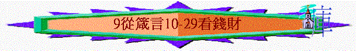

|
所羅門箴言第一集 |
所羅門箴言第二集 |
所羅門箴言第三集 |
其他人的言語附篇 |
|
1 - 9 |
10-24 |
25-29 |
30-31 |
一.錢財的特質
1.虛無會走的
「你豈要定睛在虛無的錢財上嗎？因錢財必長翅膀，如鷹向天飛去。」23:5
2.不能永存的
「因為資財不能永有，冠冕豈能存到萬代？」27:24
二.錢財的影响
1.多財的
A.多有朋友
「貧窮人連鄰舍也恨他；富足人朋友最多。」14:20
B.煩亂不安
「少有財寶，敬畏耶和華，強如多有財寶，煩亂不安。」15:16
C.行事不義
「多有財利，行事不義，不如少有財利，行事公義。」16:8
2.少財的
A.朋友遠離
「財物使朋友增多；但窮人朋友遠離。」19:4
「貧窮人，弟兄都恨他；何況他的朋友，更遠離他！他用言語追隨，他們卻走了。」19:7
B.敬畏真神
「少有財寶，敬畏耶和華，強如多有財寶，煩亂不安。」15:16
C.行事公義
「多有財利，行事不義，不如少有財利，行事公義。」16:8
三.求財的注意
1.不要貪戀財利
「貪戀財利的，擾害己家；恨惡賄賂的，必得存活。」15:27
2.不求不義之財
「不義之財毫無益處；惟有公義能救人脫離死亡。」10:2
3.不專靠己財物
「倚仗自己財物的，必跌倒；義人必發旺，如青葉。」11:28
4.不用詭詐得財
「用詭詐之舌求財的，就是自己取死；所得之財乃是吹來吹去的浮雲。」21:6
5.小心不勞之財
「不勞而得之財必然消耗；勤勞積蓄的，必見加增。」13:11
6.勿急於想發財
「人有惡眼想要急速發財，卻不知窮乏必臨到他身。」28:22
四.積財的方法
1.窮乏的原因
A.懶惰
「手懶的，要受貧窮；手勤的，卻要富足。」10:4
B.吝惜
「有施散的，卻更增添；有吝惜過度的，反致窮乏。」11:24
C.貪睡
「不要貪睡，免致貧窮；眼要睜開，你就吃飽。」20:13
D.愛宴樂
「愛宴樂的，必致窮乏；好酒，愛膏油的，必不富足。」21:17
E.好酒
「因為好酒貪食的，必至貧窮；好睡覺的，必穿破爛衣服。」23:21
F.妓女結交
「愛慕智慧的，使父親喜樂；與妓女結交的，卻浪費錢財。」29:3
2.積財的方法
A.手勤
「手懶的，要受貧窮；手勤的，卻要富足。」10:4
B.積蓄
「不勞而得之財必然消耗；勤勞積蓄的，必見加增。」13:11
C.施散
「有施散的，卻更增添；有吝惜過度的，反致窮乏。」11:24
D.作義人
「義人家中多有財寶；惡人得利反受擾害。」15:6
五.窮人與富人
「富戶窮人在世相遇，都為耶和華所造。」22:2
1.不好的富足人
a.自以為有智慧的富足人
「富足人自以為有智慧，但聰明的貧窮人能將他查透。」28:11
b.乖謬愚妄的富足人
「行為純正的貧窮人勝過乖謬愚妄的富足人。」19:1
c.欺壓窮人的富足人
「貧窮人說哀求的話；富足人用威嚇的話回答。」18:23
2.應憐憫的窮人
「行為純正的貧窮人勝過乖謬愚妄的富足人。」19:1
「行為純正的窮乏人勝過行事乖僻的富足人。」28:6
a.不應的回應
(1)藐視鄰舍
「藐視鄰舍的，這人有罪；憐憫貧窮的，這人有福。」14:21
(2)欺壓貧窮
「欺壓貧寒的，是辱沒造他的主；憐憫窮乏的，乃是尊敬主。」14:31
(3)戲笑窮人
「戲笑窮人的，是辱沒造他的主；幸災樂禍的，必不免受罰。」17:5
(4)佯為不見
「賙濟貧窮的，不至缺乏；佯為不見的，必多受咒詛。」28:27
(5)搶他財物
「貧窮人，你不可因他貧窮就搶奪他的物，也不可在城門口欺壓困苦人；」22:22
b.應有的回應
(1)憐憫貪窮
「藐視鄰舍的，這人有罪；憐憫貧窮的，這人有福。」14:21
「欺壓貧寒的，是辱沒造他的主；憐憫窮乏的，乃是尊敬主。」14:31
「憐憫貧窮的，就是借給耶和華；他的善行，耶和華必償還。」19:17
(2)賙濟窮人
「賙濟貧窮的，不至缺乏；佯為不見的，必多受咒詛。」28:27
(3)誠實判斷
「君王憑誠實判斷窮人；他的國位必永遠堅立。」29:14
(4)與他交往
「心裡謙卑與窮乏人來往，強如將擄物與驕傲人同分。」16:19